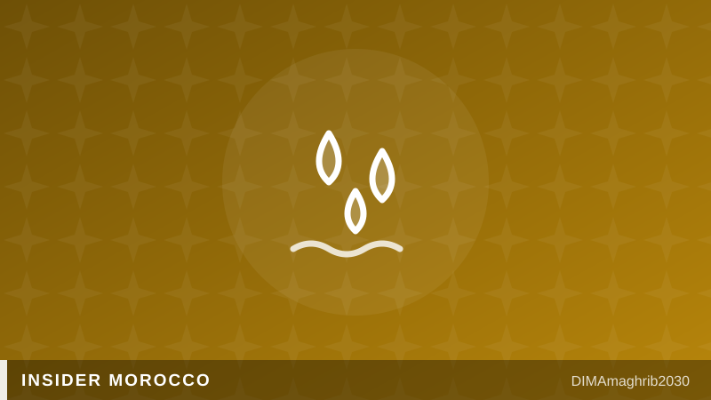

Fin de la sécheresse au Maroc : hammams, piscines et cascades — ce qui rouvre vraiment cet été 2026Morocco's Drought Is Over — Here's How Your Summer 2026 Trip Just Got Better

Je vais être honnête avec vous : depuis sept ans, chaque été, je devais expliquer aux amis de passage pourquoi le hammam du quartier était fermé le lundi, pourquoi la piscine du riad restait à moitié vide, pourquoi la cascade promise n'était qu'un filet triste. Cette année, enfin, je peux écrire autre chose. La fin de la sécheresse au Maroc est réelle : nos barrages affichent 76% de remplissage, contre environ 40% en mai 2025, et comme le rapporte Hespress, aucune coupure ni baisse de pression n'est prévue dans les grandes villes pendant ce pic de juillet-août. C'est le premier été depuis 2022 sans rationnement urbain. Chez nous, on n'ose presque pas y croire.
Le tournant, c'est le 13 décembre 2025. Les pluies qui ont commencé ce jour-là ont apporté environ 16 milliards de m³ d'apports en quatre mois, selon LeBrief et Maroc Diplomatique — de quoi effacer sept années noires. Pour vous donner l'échelle : en février 2024, les barrages étaient tombés à 23%. Ma grand-mère disait que le ciel nous avait oubliés. Il s'est bien rattrapé.
Hammam Maroc 2026 : la réouverture qu'on attendait
Parlons de ce qui vous concerne : la réouverture des hammams au Maroc en 2026. Pendant la crise, les hammams de Casablanca et d'autres villes étaient contraints de fermer trois jours par semaine — un crève-cœur, car le hammam n'est pas un spa touristique, c'est notre rituel social. Aujourd'hui, comme le rapportent H24info et LeBrief, les propriétaires exigent la réouverture complète, et beaucoup d'établissements de quartier tournent déjà presque normalement. Mon conseil d'ami : oubliez les hammams d'hôtel à 60 euros et poussez la porte d'un hammam populaire (10 à 20 dirhams l'entrée).
L'étiquette hammam local, version vraie : apportez votre savon noir, un gant kessa, une serviette et des tongs. On garde le bas du maillot, toujours. Saluez en entrant, proposez de verser de l'eau aux voisines ou voisins âgés — ce petit geste vous ouvrira toutes les conversations. Et payez la kessala (la gommeuse) directement, 50 dirhams bien investis. Ne photographiez rien, jamais. C'est un lieu de confiance.
Cascades Maroc été 2026 : la vallée revit
Les cascades du Maroc cet été 2026 valent enfin le détour. Dans l'Ourika, les sept cascades de Setti Fatma coulent comme dans mon enfance, et la vallée d'Azzaden, côté Toubkal, est redevenue verte et bruyante d'eau. Partez tôt le matin, mangez un tajine les pieds au bord de l'oued, et négociez gentiment le guide local — il connaît les passages que Google ignore. Côté piscines, les règles de sécheresse limitaient les remplissages à un par an, comme le rapportait Bladi.net ; ces restrictions sont en cours de révision, et les riads remettent leurs bassins en eau.
Une chose ne change pas : l'eau reste sacrée
Mais écoutez le conseil du fond du cœur : même en année pluvieuse, on traite l'eau comme un trésor. Sept ans de stress hydrique, ça marque un peuple. Douches courtes, robinet fermé, pas de gaspillage ostentatoire — vous serez respectés pour ça. L'eau, c'est la vie, on le dit ici sans ironie.
Bonus pratique : la 5G est désormais active dans plus de 100 villes via Maroc Telecom, Orange et inwi, sans surcoût, avec 45% de couverture de la population prévue fin 2026, selon Developing Telecoms. Prenez une carte SIM locale à l'aéroport : vos photos de cascades partiront plus vite que jamais. Marhba bikoum — l'eau est revenue, venez la célébrer avec nous.
Let me be straight with you: for seven years, every summer, I had to explain to visiting friends why the neighbourhood hammam was shut on Mondays, why the riad pool sat half-empty, why the waterfall I'd promised was a sad trickle. This year, finally, I get to write something different. Morocco's drought is over in 2026 — truly over. Our dams are sitting at 76% capacity, up from around 40% in May 2025, and as Hespress reported, no rationing or reduced water pressure is expected in the big cities during this July-August peak. It's the first summer since 2022 with Morocco's water restrictions lifted in urban areas. Honestly, we barely dare believe it.
The turning point was 13 December 2025. The rains that started that day delivered roughly 16 billion cubic metres of inflows in about four months, according to LeBrief and Maroc Diplomatique — enough to erase seven brutal years. For scale: in February 2024, the dams had fallen to 23%. My grandmother used to say the sky had forgotten us. It made up for lost time.
The hammams are coming back — go to a real one
Here's what actually matters for your trip. During the crisis, hammams in Casablanca and other cities were forced to close three days a week — and believe me, that hurt, because the hammam isn't a tourist spa here, it's our social ritual. Now, as H24info and LeBrief report, owners are demanding full reopening, and many neighbourhood bathhouses are already running close to normal. My friend-to-friend advice: skip the 60-euro hotel hammam and walk into a local one. Entry costs 10 to 20 dirhams, and it's the closest thing to time travel Morocco offers. Any best hammams Morocco local guide worth its salt will tell you the same: the magic is in the ordinary ones.
Real hammam etiquette in Morocco, no sugarcoating: bring your own black soap (savon beldi), a kessa scrubbing glove, a towel and flip-flops. Keep your bottom half covered, always. Greet people when you enter, and offer to pour water for elderly neighbours — that one small gesture will earn you smiles and conversation. Pay the kessala (the scrubber) directly; 50 dirhams for the best exfoliation of your life. And never, ever take photos. It's a place built on trust.
Waterfalls and pools: the valleys are alive again
The waterfalls are finally worth the drive. In the Ourika Valley, the seven falls of Setti Fatma are roaring like they did in my childhood, and the Azzaden Valley on the Toubkal side is green and loud with water again. Go early, eat a tagine with your feet at the river's edge, and haggle kindly with a local guide — he knows paths Google doesn't. As for pools: drought rules had limited them to a single fill per year, as Bladi.net reported, but those restrictions are now being revisited, and riads are quietly refilling their basins.
One thing hasn't changed: water is still sacred
But hear this, from the heart: even in a wet year, we treat water like treasure. Seven years of scarcity leave a mark on a people. Take short showers, close the tap, don't flaunt waste — you'll be respected for it. Water is life, we say here, and we mean it literally.
One practical bonus: 5G is now live in more than 100 cities via Maroc Telecom, Orange and inwi at no extra cost, with 45% population coverage due by end-2026, according to Developing Telecoms. Grab a local SIM at the airport and your waterfall videos will upload before you've dried off. Marhba bikoum — the water came back, come celebrate it with us.